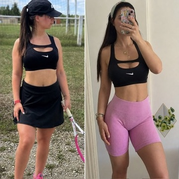

Des femmes comme toi — débordées, post-partum, épuisées, qui avaient tout essayé. Elles ont changé leur corps. Et leur vie avec.
Gardienne de la paix. Compétitrice bikini fitness. Puis grossesse difficile — corps transformé, confiance en miettes. J'ai tout reconstruit. Depuis zéro. Et ça m'a rendu une meilleure coach.


Après ma grossesse, je ne reconnaissais plus mon corps. La fatigue, le ventre qui ne partait pas, la silhouette qui avait changé. J'avais beau être coach — ça ne m'avait pas épargnée.
Un corps que je ne reconnaissais plus. Une confiance qui avait disparu. La fatigue comme état normal.
Un corps fort, redessiné, qui me ressemble. De l'énergie retrouvée. La fierté de m'être prouvé que c'était possible.
Pas besoin d'être athlète. Pas besoin de 2h de sport par jour. Pas besoin de te priver. Tu as juste besoin de la bonne méthode — et de quelqu'un qui croit en toi.
Pas des athlètes. Pas des femmes avec du temps libre. Des mamans, des actives, des femmes qui avaient déjà tout essayé.

Une vraie envie de reprendre le contrôle de son corps, sans se priver ni s'épuiser. Programme sur-mesure, 2 séances par semaine à domicile, adapté à sa vie réelle. Résultat : −9 cm de tour de taille, un dos redessiné, une silhouette transformée. En 4 mois.
Je veux des résultats comme ça →
Elle ne croyait plus vraiment aux résultats rapides. En 4 semaines, elle a vu sa taille affiner et ses fessiers remonter.
Maman de 2 enfants, peu de temps. 1 séance par semaine avec moi, 3 autres séances créées sur-mesure en autonomie. La progression parle d'elle-même.

En 4 séances à domicile, une transformation visible sur toute la silhouette. Fessiers remontés, cuisses et poitrine affinées — sans régime, sans s'épuiser.
Sans programme fait pour elle, sans direction claire — elle tournait en rond depuis des années. Elle m'a contactée. On a tout repris de zéro, sans se presser.

« Après des années en salle sans résultats, j'ai enfin compris pourquoi je stagnais. Le programme sur-mesure a tout changé. »
Le physique, c'est ce qu'on voit en premier. Mais ce qui dure, c'est ce que tu ressens à l'intérieur.
« Dans 3 mois, tu peux être une autre femme.
Pas parfaite — mais enfin elle-même. »
J'ai commencé le coaching avec Ornella après ma grossesse. En quelques semaines : meilleure posture, tonus retrouvé et surtout confiance en moi. Elle ne promet pas de miracle — elle travaille intelligemment et les résultats sont là.
→ Post-partum · Confiance retrouvée
En 4 séances je commence déjà à constater les bénéfices. La variété des entraînements, les encouragements et l'attention à la posture — on sent qu'elle sait ce qu'elle fait.
→ Résultats dès les premières séances
J'ai conseillé Ornella à une amie qui voulait se transformer. Ce qu'elle attendait, elle l'a obtenu grâce au coaching professionnel d'Ornella. Je recommande à 100%.
→ Transformation complète · Résultats obtenus
90% des femmes seules abandonnent.
Celles qui sont accompagnées avancent — semaine après semaine, résultat après résultat.
On commence par un échange sur WhatsApp. On parle de toi, de tes objectifs, de ta vie réelle.
Premier contact simple. Sans pression.
✓ Premier échange WhatsApp · Sans engagement · Réponse rapide
🎉 C'est dans ta boîte !
Vérifie tes spams si tu ne vois rien dans 2 minutes.